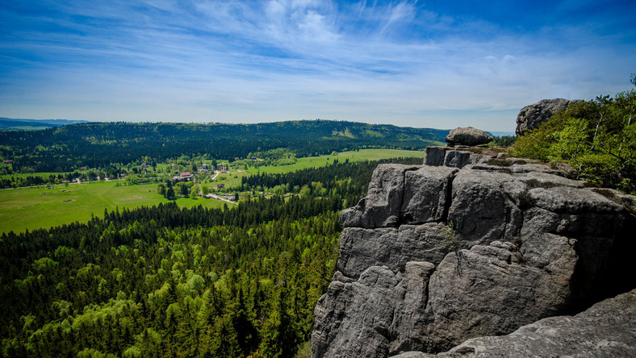

Góry Stołowe

Góry Stołowe na mapie.
Góry Stołowe (332.48; niem. Heuscheuergebirge, cz. Stolové hory, daw. Hejšovina) – pasmo górskie w łańcuchu Sudetów Środkowych. Wypiętrzone przed 30 milionami lat są jednymi z nielicznych w Europie gór płytowych[1]. Płyty z górnokredowych piaskowców ciosowych ułożone są poziomo – stąd nazwa gór, bo płaskie jak stół. Zachodnia część Gór Stołowych leży na terenie Czech i nosi nazwę Broumovská vrchovina. Północno-zachodni skraj pasma w okolicach Mieroszowa – Gorzeszowa – Krzeszowa – Chełmska – Okrzeszyna nosi nazwę Zaworów. W 1993 na terenie Gór Stołowych utworzono Park Narodowy Gór Stołowych.